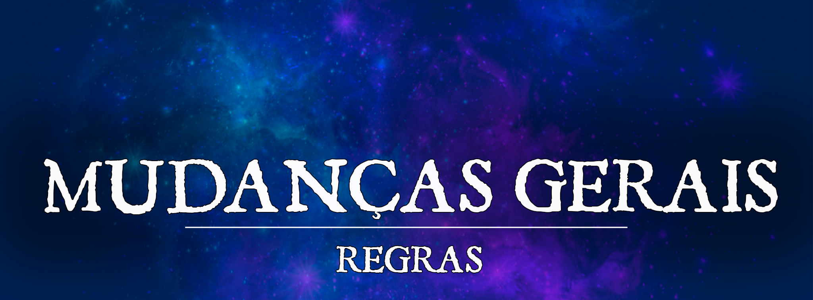

Mudanças Gerais em Raças, Classes, Itens e Magias
Muitas classes e raças oficiais de D&D 5e receberam algumas mudanças e pequenos ajustes para se adequarem melhor ao cenario e funcionamento do Critical Bastards. Todas elas estão citadas abaixo.
ATENÇÃO! Todas as mudanças e regras adicionais aqui listados são material Homebrew e/ou em playtest e estão sujeitos à modificações (nerfs ou buffs) caso seja necessário. Leiam com atenção para evitar dúvidas ou futuras reclamações infundadas.
Mudanças em Raças
Para melhor refletir a essência de certas raças ou para rebalanceá-las, as seguintes alterações foram feitas nas raças e estas sobrepõem quaisquer informações escritas no Livro.
Raças com Versões Diferentes
Algumas raças possuem versões de livros diferentes, nesses casos, nós apenas permitimos as versões do livro Mordenkainen Presents: Monsters of the Multiverse (MpMM) caso a opção desse livro esteja entre as opções das raças.
Marcas Ancestrais
Alguns jogadores haviam se mostrado interessados em utilizar algumas Dragon Marks de raças específicas em outras raças. E movidos por este interesse, nós viemos trabalhando durante a semana e fizemos uma mudança mecânica que permite que qualquer raça possua uma Dragon Mark.
Introduzimos então as chamadas Marcas Ancestrais!
[articleblock:ea355795-304e-474c-b13a-745dc302ff3b]
Estas marcas funcionarão como linhagens (semelhantes ao Hexblood e Reborn) podendo ser aplicadas em qualquer raça jogável.
PORÉM, as sub-raças originais que possuiam as marcas continuam existindo, e um jogador pode escolher qual irá utilizar na hora da criação de sua ficha.
Raças Expandidas
Atualmente, possuimos 3 raças expandidas criadas pelos nossa equipe de desenvolvimento que podem ser escolhidas na hora da criação de personagem.
Gnolls Parecidos com Hienas, estes humanoides decidiram ir contra a natureza de sua ancestralidade. [articleblock:5189ea62-f53a-4da9-b316-1735c4254875]
Povo Planta Vindos das florestas, estas criaturas são plantas antropomórficas que decidiram se juntar a sociedade humana. [articleblock:1451645d-17d6-4202-aefe-1529c3a8f718]
Bullywug Sapos ( ou quase isso), estas criaturinhas são lisas e astutas, e podem usar sua língua como um terceiro braço. [articleblock:df7cd7d9-e1b0-461c-9b5e-81151df74ba4]
Raças com a opção de tamanho "Grande"
No projeto algumas raças podem, a escolha do jogador, ser consideradas Grandes (Large). O mestre poderá decidir se o personagem terá alguma desvantagem ou vantagem situacional devido a seu tamanho. (Pode por exemplo ter desvantagem em ataques em lugares feitos para criaturas pequenas ou médias.)
As raças que podem variar de tamanho são as seguintes:
- Aasimar¹
- Centauro
- Draconato
- Firbolg
- Golias
- Loxodonte
- Minotauro
- Forjado¹*
- Bugurso
- Leonino
- Orc
- Hibrido Symic
- Tiferino
- Transmorfo (Changeling)
- Plasmoide
- Giff
- Hexblood¹
- Reborn¹
- Dhampir¹
Nota: Aasimares e outras linhagens que forem de raças que possuam a opção de tamanho grande poderão ser de tamanho grande (ex: Golias Aasimar.)
¹Estas raças também podem ser de Tamanho Pequeno.
Centauros
Lança de Montaria: Centauros poderão usar lanças de montaria e são considerados montados.
Sensibilidade a Luz Solar
As raças com Sunlight Sensitivity (raças como drow, kobolds e duergares que tinham) podem optar por ter ou não essa característica, completamente à escolha do jogador.
Mudanças em Classes
Aqui no Critical Bastards algumas classes sofreram rebalanceamentos e mudanças para que ficassem mais coesas com o cenário e fossem mais divertidas no geral.
Arquétipos Exclusivos de Raças
Com o objetivo de tornar o jogo menos restritivo e mais divertido para nossos jogadores, todos os Arquétipos que necessitam de uma raça específica, como o Bladesinger, perdem os requisitos Raciais.
O talento Revenant Blade foi alterado para Revenant Weapon, perdendo os requisitos do personagem ser Elfo e aplicando seus benefícios também para a arma Corrente de Espinhos (descrição da arma na subseção "Lista De Itens Expandidos")
Características e Magias em Ataques Desarmados e Armas Naturais
Para conceber melhor os diferentes estilos de jogo, características e magias que podem melhorar armas, como Holy Weapon, Magic Weapon, Elemental Weapon, ou outras caracteríticas que podem melhorar apenas armas, também podem ser aplicadas em Ataques Desarmados e Armas Naturais.
Talento "Gunner" Remodelado.
Para adequar melhor o talento ao cenário, criamos novas armas de fogo e modificamos um pouco o talento:
O talento revisado e as novas armas de fogo podem ser encontradas no artigo abaixo:
[articleblock:d941f074-c302-4695-b76d-9157ae638476]
Talento Atificer Adept
O Feat Artificer Initiate foi modificado, deixando de dar uma cantrip e passando a dar uma infusão de Artificer para o personagem. O nível base do jogador não conta para evoluir a infusão, apenas o nível de artificer, caso o personagem possua esta classe.
Talento Crossbow Expert
O Crossbow Expert foi modificado, passando a dar um aumento na sua pontuação de Destreza em 1, até o máximo de 20.
Patrulheiro Revisado
Assim como há um consenso sobre os Draconatos serem considerados fracos em relação a outras raças, também há o consenso que Patrulheiros se encontram no lado mais fraco do balanceamento. Para trazer o Patrulheiro mais em linha com as outras classes, nós utilizamos a versão revisada lançada pela Wizards como Unearthed Arcana que pode ser encontrada no seguinte link
Conjuração
O patrulheiro pode preparar um número de magias igual à metade do seu nível mais seu bônus de sabedoria. Sua caracteristica conjuração passa a funcionar na seguinte forma:
No final de um descanso longo você seleciona um número de magias igual ao seu modificador de Sabedoria + metade do seu nível de patrulheiro, arredondado para baixo (mínimo de uma magia). Essas magias devem ser de níveis que você possua espaços de magia.
Patrulheiro Mestre das Bestas
O Companheiro Animal do Patrulheiro Mestre das Bestas teve algumas mudanças:
Companheiro Animal No 3º nível, você aprende a usar sua magia para criar um vínculo poderoso com uma criatura do mundo natural.
Com 8 horas de trabalho e o gasto de 50 peças de ouro em ervas raras e alimentos finos, você chama uma criatura da natureza para servir como seu fiel companheiro. Normalmente, você escolhe seu companheiro entre as seguintes criaturas: um macaco, um urso negro, um javali, um texugo gigante, uma doninha gigante, uma mula, um puma ou um lobo. Além disso, você pode escolher diferentes companheiros seguindo a tabela abaixo:
| Bônus de Proficiência do Personagem | CR da Fera |
|---|---|
| +2 | 1/4 |
| +3 | 1/2 |
| +4 | 1 |
| +5 | 1 |
| +6 | 2 |
*Se você escolher uma criatura com velocidade de voo, não pode usá-la como montaria a menos que ela esteja equipada com uma Sela Exótica.
Ao final das 8 horas, seu companheiro animal aparece e recebe todos os benefícios de sua habilidade de Vínculo do Companheiro. Você só pode ter um companheiro animal por vez.
Se seu companheiro animal for morto, o vínculo mágico que compartilham permite que você o traga de volta à vida. Com 8 horas de trabalho e o gasto de 25 peças de ouro em ervas raras e alimentos finos, você convoca o espírito de seu companheiro e usa sua magia para criar um novo corpo para ele. Você pode ressuscitar um companheiro animal dessa maneira mesmo que não possua parte alguma do seu corpo.
Se você usar essa habilidade para ressuscitar um ex-companheiro animal enquanto tiver um companheiro animal atual, seu companheiro atual o deixará e será substituído pelo companheiro restaurado.
Ladino Ladrão
Para permitir um estilo de jogo mais divertido, o Rogue Thief passa a poder usar Fast Hands em itens mágicos, exceto se a ação do item mágico acarretar na conjuração de uma magia.
Exemplo: Usar a wand of Magic Missile é proibido, por estar claro que você usa a ação para conjurar Magic Missile por ela.
Usar um Necklace of Fireballs é permitido, por estar claro que a ação usada é para atirar uma peça do item, por mais que ele conjure Fireball.
Guerreiros
Os arqueiros arcanos sempre foram considerados uma das subclasses mais fracas de Guerreiro, então nós demos uma repaginada na classe tornando-a mais viável.
[articleblock:4f27ce49-e743-4b3a-8b6a-643699eec34b]
Cavaleiro Arcano
O Cavaleiro Arcano ganha a seguinte habilidade opcional que subistitui a sua característica de nível 7:
Magia de Guerra Aprimorada - 7º nível
Substitui a característica Magia de Guerra
Quando você faz a Ação de Ataque no seu turno, você pode substituir um dos ataques pela conjuração de um dos seus truques de Mago que tenha o tempo de conjuração de uma ação.
Feiticeiros
Em vista das subclasses do Tasha, consideramos melhor disponibilizar listas de magia expandidas para as outras subclasses, permitindo assim que elas acompanhem o "fluxo" das outras classes, mantendo sua temática.
[articleblock:e77cb4f6-7da1-4a2c-9cc8-338e4138cd42]
Além disso, temos uma subclasse inteira feita pela nossa equipe de desenvolvimento que pode ser utilizada pelos jogadores no nosso servidor
Feiticeiro Boreal Tocados pelo frio, pela neve e pelo gelo, esses feiticeiros são combatentes corpo a corpo que criam maneiras de se defender e trazer uma tempestade glacial ao campo de batalha. [articleblock:26875920-5e24-4700-b02b-2511bc5896a6]
Monges
Para balancear a classe, o Monge passa a seguir a seguinte tabela de dados de dano no ataque desarmado:
| Dado Antigo | Dado Revisado |
|---|---|
| d4 | d6 |
| d6 | d8 |
| d8 | d10 |
| d10 | d12 |
Além disso, o Monge dos Quatro Elementos recebeu uma revisão que pode ser encontrada no artigo abaixo:
[articleblock:04267344-3089-43a5-8e46-153d1f259ae9]
Magos, Bruxos e Grimórios
Como todos sabem, Magos com seus grimórios e, talvez não notoriamente, Bruxos com seu Livro das Sombras, possuem um sistema próprio para escrever magias em seus respectivos livros e aumentar a sua lista de magias conhecidas. Para adequar esta mecânica ao nosso projeto, o funcionamento foi alterado para o seguinte:
- É permitido que se empreste grimórios para outro jogador para que ele possa copiar magias, gastando dinheiro para essa transcrição como de costume. No entanto, como uma pequena limitação, um jogador que emprestar seu grimório não poderá usa-lo naquele mesmo dia, seja em missões ou para emprestar a outra pessoa (limitando dessa forma que um jogador só possa emprestar para 1 pessoa por dia).
- Você deverá gastar 50 PO por nível da magia, ou metade disso de acordo com a característica que da desconto para as magias da sua escola.
Paladinos
Algumas pequenas mudanças foram feitas em algumas mecânicas da classe.
Destruição Divina: Pode ser dado em ataque desarmado e armas naturais.
Juramento da Morte: O conhecido paladino Quebrador de Juramentos recebeu uma repaginada e é liberado, com algumas alterações, no cenário de Pheros como o Juramento da Morte.
As mudanças na subclasse podem ser encontradas no artigo abaixo
[articleblock:7209cdb9-72a0-461e-af30-a011fdb2fe29]
Juramento do Mar Tempestuoso Uma subclasse completamente nova desenvolvida para se adequar no cenário do Critical Bastards
Uma ordem pouco conhecida de aventureiros dos mares, que aprendem a domar os raios e trovões para viver em liberdade e explorar os sete mares. [articleblock:fcf1dafb-1e6d-4e74-8cd0-4e937070218c]
Bruxos
Algumas pequenas mudanças foram feitas em algumas mecânicas da classe.
Magias do Pacto: A característica Magias do Pacto tem a seguinte alteração:
Ao fim de um descanso longo, o bruxo pode substituir as suas magias conhecidas por outras magias da lista de magias de bruxo.
Arma de Pacto: Armas do Ferreiro podem ser usadas como Armas de Pacto da classe Warlock.
Pacto do Gênio: A característica Desejo Limitado (Nível 14) recebeu uma mudança:
Caso seja usado fora de uma mesa, você deve cumprir os pré requisitos de componente materiais.
Pacto da Arquifada
As seguintes caracteristicas do Bruxo Arquifada foram alteradas:
Presença Feérica: Você pode usar a Presença Feérica um número de vezes igual ao seu bônus de proficiência. Quando terminar um descanso longo, você recupera todos os usos gastos.
Escape Nebuloso:Você pode usar o Escape Nebuloso um número de vezes igual ao seu bônus de proficiência. Quando terminar um descanso longo, você recupera todos os usos gastos.
Defesas Encantadoras:Tem seu texto alterado para:
Começando no 10º nível, seu patrono ensina a você como reverter a magia que afeta a mente de seus inimigos contra eles. Você é imune a ser encantado e amedrontado, e quando outra criatura tentar encantar ou amedrontar você, você pode usar sua reação para tentar reverter o encanto ou o medo de volta para essa criatura. A criatura deve ser bem-sucedida em um teste de resistência de Sabedoria contra o seu valor de CD de resistência de feiticeiro ou ficará encantada e amedrontada por você por 1 minuto ou até que a criatura sofra qualquer dano.
Pacto do Corruptor: A característica de nível 6 Sorte do Senhor das Trevas tem a seguinte mudança: Você pode usar a Sorte do Senhor das Trevas um número de vezes igual ao seu bônus de proficiência. Quando terminar um descanso longo, você recupera todos os usos gastos.
Pacto do Morto-Vivo: A característica de nível 14 Projeção Espiritual tem a seguinte mudança em seu texto: Seu espírito pode permanecer fora de seu corpo por até 1 hora, até que você o encerre com uma ação ou até que seus pontos de vida atinjam 0.
Arcano Místico: A característica Arcano Místico foi modificada, ficando assim:
No 11º nível, seu patrono concede a você um segredo mágico chamado arcano. Escolha um feitiço de 6º nível da lista de feitiços do bruxo como este arcano místico.
Você pode lançar seu arcano místico uma vez sem gastar um espaço de feitiço. Você deve terminar um longo descanso antes de fazê-lo novamente.
Em níveis mais altos, você ganha mais magias de bruxo de sua escolha que podem ser lançadas desta forma: uma magia de 7º nível no 13º nível, uma magia de 8º nível no 15º nível e uma magia de 9º nível no 17º nível. Você recupera todos os usos de seu Arcano Místico quando termina um longo descanso.
Adicionalmente, ao fim de um descanso longo, você pode substituir cada um de seus arcanos místicos por outros feitiços do mesmo nível da lista de bruxo.
Pacto da Lâmina: O pacto da lâmina tem o seguinte parágrafo adicionado:
Ao utilizar sua arma de pacto, você pode escolher utilizar o modificador carisma no lugar do modificador de força ou destreza para jogadas de ataque e dano.
Pacto da Corrente: Bruxos com o Pacto da Corrente são notórios por terem familiares diferentes com mecânicas voltadas em dar ênfase ao seu uso. Com o intuito de expandir as opções do Bruxo, liberou-se o uso de Gazers como familiares, indo em linha com a regra opcional de Volo's Guide to Monsters.
Invocações Místicas: Algumas invocações místicas receberam mudanças:
Ladrão dos Cinco Destinos (Thief of Five Fates)
Você aprende a magia Perdição (Bane) e esta não conta para o seu número de magias aprendidas. Você também pode conjurar esta magia uma vez sem gastar um espaço de magia. Você pode fazê-lo novamente após terminar um descanso longo.
Presente das Profundezas (Gift of the Depths) Pré-requisito: 5º Nível
Você pode respirar embaixo d’água e você ganha velocidade de nado igual a sua velocidade de caminhada.
Você aprende a magia Respirar Embaixo D’água (Water Breathing) e esta não conta para o seu número de magias aprendidas. Você também pode conjurar esta magia uma vez sem gastar um espaço de magia. Você pode fazê-lo novamente após terminar um descanso longo.
Turvar a Mente (Mire the Mind) Pré-requisito: 5º Nível
Você aprende a magia Lentidão (Slow) e esta não conta para o seu número de magias aprendidas. Você também pode conjurar esta magia uma vez sem gastar um espaço de magia. Você pode fazê-lo novamente após terminar um descanso longo.
Sinal de Mal Presságio (Sign of Ill Omen) Pré-requisito: 5º Nível
Você aprende a magia Rogar Maldição (Bestow Curse) e esta não conta para o seu número de magias aprendidas. Você também pode conjurar esta magia uma vez sem gastar um espaço de magia. Você pode fazê-lo novamente após terminar um descanso longo.
Servidão Além da Morte (Undying Servitude) Pré-requisito: 5º Nível
Você aprende a magia Reanimar os Mortos (Animate Dead) e esta não conta para o seu número de magias aprendidas. Você também pode conjurar esta magia uma vez sem gastar um espaço de magia. Você pode fazê-lo novamente após terminar um descanso longo.
Sussurros Encantadores (Bewitching Whispers) Pré-requisito: 7º Nível
Você aprende a magia Compulsão (Compulsion) e esta não conta para o seu número de magias aprendidas. Você também pode conjurar esta magia uma vez sem gastar um espaço de magia. Você pode fazê-lo novamente após terminar um descanso longo.
Palavra Terrível (Dreadful Word) Pré-requisito: 7º Nível
Você aprende a magia Confusão (Confusion) e esta não conta para o seu número de magias aprendidas. Você também pode conjurar esta magia uma vez sem gastar um espaço de magia. Você pode fazê-lo novamente após terminar um descanso longo.
Escultor de Carne (Sculptor of Flesh) Pré-requisito: 7º Nível
Você aprende a magia Polimorfar (Polymorph) e esta não conta para o seu número de magias aprendidas. Você também pode conjurar esta magia uma vez sem gastar um espaço de magia. Você pode fazê-lo novamente após terminar um descanso longo.
Fuga do Trapaceiro (Trickster's Escape) Pré-requisito: 7º Nível
Você aprende a magia Liberdade de Movimento (Freedom of Movement) e esta não conta para o seu número de magias aprendidas. Você também pode conjurar esta magia uma vez sem gastar um espaço de magia. Você pode fazê-lo novamente após terminar um descanso longo.
Servos do Caos (Minions of Chaos) Pré-requisito: 9º Nível
Você aprende a magia Conjurar Elemental (Conjure Elemental) e esta não conta para o seu número de magias aprendidas. Você também pode conjurar esta magia uma vez sem gastar um espaço de magia. Você pode fazê-lo novamente após terminar um descanso longo. |Invocações Místicas Modificadas
Além disso, temos 3 Invocações Místicas completamente novas:
Familiar Desencadeado
Pré-requisito: Nível 5, Pacto da Corrente
Seu patrono lhe concedeu parte de sua essência pura para ser infundida em seu familiar, transformando-o temporariamente em um Familiar Desencadeado.
Enquanto seu familiar estiver vivo e no mesmo plano de existência que você, gastando uma ação, você pode alterar sua forma e tipo, transformando-o em um Familiar Desencadeado por 10 minutos. Uma vez que altere o familiar dessa forma, você só poderá fazê-lo novamente após um descanso longo ou se gastar um espaço de magia de bruxo.
Em combate o familiar partilha a sua iniciativa, agindo logo após seu turno. Ele possui ações, reações e ações bônus próprias.
Familiar Desencadeado
Classe de Armadura: 14 + PB (Armadura Natural)
Pontos de Vida: 5 + 3 vezes o nível de warlock
Velocidade: 30 ft., 30 ft. vôo/nado/escalada (Escolha um)
STR14 (+2)CON14 (+2)WIS12 (+1)
DEX14 (+2)INT10 (+0)CHA12 (+1)
Testes de Habilidade: Furtividade 2+PB, Percepção 1+PB
Salvaguarda:Con 2+PB, Car 1+PB
Resistências: escolha um entre ígneo, ácido, elétrico, trovejante, gélido, venenoso, necrótico, radiante, psíquico, cortante, perfurante ou contundente não mágicos.
Imunidades: encantamento(charmed), amedrontado(frightened)
Sentidos: Visão no escuro 60 ft., Percepção passiva 11+PB
Línguas: Comum, Entende as línguas que você fala
Bônus de Proficiência: igual ao do bruxo
Características
Escolha uma entre:
* Curandeiro: Efeitos de cura, como magias e poções, usados enquanto o familiar está a 10 ft. da criatura alvo do efeito, faz com que a criatura afetada cure o modificador de carisma do bruxo como cura adicional.
* Violento: O familiar adiciona seu bônus de proficiência no dano de seus ataques.
* Encosto: Possui uma ação especial para assombrar os inimigos.
Ações
As ações do familiar desencadeado variam de acordo com a característica escolhida:
* Rajada Sobrenatural (Todos os tipos): Ataque com Arma à Distância, Mod. de Conj+BP para acertar, alcance de 60 pés. Um alvo. Acerto: 1d8+Mod. de Conj. de dano de ígneo, venenoso, radiante ou necrótico. (Escolha o tipo de dano ao conjurar o familiar.)
* Charmoso e Aterrorizante (Encosto e Curandeiro): O familiar pode tentar fazer a criatura recordar coisas alegres e boas, ou pode fazê-la recordar os maiores horrores de sua vida. Uma criatura dentro de 30 pés do familiar deve ser bem-sucedida em um salvaguarda de sabedoria (CD de magia do bruxo) ou ficará amedrontada ou enfeitiçada (à sua escolha) até o final do próximo turno do familiar em caso de falha. Em caso de sucesso, a criatura se torna imune à ação Charmoso e Aterrorizante por 1 hora.
* Assombrar (Encosto): O familiar usa uma ação para assombrar uma criatura que esteja enfeitiçada ou amedrontada pelo bruxo ou sob efeito de Charmoso e Aterrorizante, a criatura então sofre 3d6 de dano psíquico.
Efeitos que permitem refazer o teste de resistência, são encerrados ou têm como gatilho sofrer dano, não são ativados por essa característica.
* Fuga do perigo (Reação, Curandeiro): Ao receber dano de qualquer fonte, caso o bruxo esteja em até 60 pés do familiar, o familiar pode gastar uma reação para se teleportar de volta até o seu bruxo e ficar invisível até realizar alguma ação ou até o início de seu próximo turno. Esta reação pode ser utilizada um número de vezes igual à metade do bônus de proficiência (arredondado para baixo).
Livro dos Contos Perdidos
Pré-requisito: Nível 12, Pacto do Tomo
Seu patrono concedeu uma dádiva ao seu Tomo das Sombras, aprisionando a consciência partida de um grande erudito. Apesar de sua vontade reduzida, a memória do sábio pode ou não exercer sua vontade para negar-lhe informação e também pode se comunicar com você através das páginas do tomo.
Uma vez por descanso curto você pode rolar um teste de Carisma e iniciar um ritual de 10 minutos com seu tomo para forçar o erudito a relevar a história de um objeto ou um lugar tocado pelo sobrenatural. Quão mais obscuro tal conhecimento mais difícil será de extrair a informação, havendo a possibilidade de ser algo além do conhecimento do erudito.
Adicionalmente, se você estiver tocando o objeto ou estiver no local sob o qual busca informação, você terá vantagem no teste.
A critério do Mestre (DM), um resultado suficientemente alto pode fazer com que seu personagem tenha breves visões do passado relacionadas ao objeto ou local.
Arma de Pacto Exaltada
Pré-requisito: Nível 5, Pacto da Lâmina
Seu patrono lhe agraciou com uma dádiva especial capaz de alterar o funcionamento de sua arma de pacto, concedendo a ela um efeito especial.
Ao escolher esta invocação mística, você deve escolher um dos tipos de arma da tabela abaixo para receber seus efeitos:
| Tipo de Arma | Efeito |
|---|---|
| Armas de Arremesso | Ao conjurar uma arma de arremesso ao seu pacto da lâmina, seu patrono lhe oferece uma cópia fantasma da mesma. A cópia fantasma de sua arma só pode ser utilizada como arma por você. Ambas as armas compartilham suas cargas e características com usos caso sejam armas mágicas que possuam tais funções. Ao realizar um ataque de arremesso com uma arma fantasma você pode fazer com que ela retorne instantaneamente para sua mão, independente de ter acertado ou não. Além disso, o alcance mínimo de arremesso da arma se torna igual ao alcance máximo da mesma. Ao acertar um ataque com sua arma você pode usar uma ação bônus para se teleportar até a arma antes dela retornar para sua mão. |
| Armas a Distância | Ao conjurar uma arma à distância ao seu pacto da Lâmina, você conjura junto a arma uma mira especial, capaz de localizar os pontos fracos de seus inimigos com mais facilidade. Ao declarar um ataque com sua arma de pacto, mágicamente um virote, flecha ou munição de arma de fogo se forma para ser usado como munição do disparo. Ao declarar um ataque com sua arma de pacto, uma vez por turno, você pode forçar o alvo a realizar uma salvaguarda de destreza contra sua DC de magia de bruxo, numa falha, o alvo tem -2 de CA contra o seu ataque. Você pode utilizar esta característica um número de vezes igual ao seu modificador de carisma, recuperando todos os usos ao final de um descanso longo. Além disso, uma vez por turno, no caso de você errar uma jogada de ataque contra uma criatura, você pode usar sua reação para re-rolar a jogada de ataque uma vez que seu patrono tenta redirecionar a flecha, virote ou munição de arma de fogo em direção ao seu alvo. |
| Armas Corpo a Corpo de Dano Contundente | Ao conjurar uma arma de dano contundente ao seu pacto da Lâmina, você atribui o peso de sua arma ao peso da grandeza de seu patrono, fazendo com que seus inimigos sejam forçados a recuar diante os seus ataques. Ao causar dano em uma criatura usando a arma de pacto, você pode forçar a criatura alvo a realizar uma salvaguarda de força contra sua DC de magia de bruxo, numa falha a criatura é empurrada 15 pés para tdás. No caso da criatura empurrada atingir uma parede ou objeto intdansponível por conta do empurrão, a criatura toma 1d6 dano contundente extda. Caso a criatura empurrada atinja outra criatura no deslocamento do empurrão. A criatura atingida deve realizar uma salvaguarda de destreza contra DC de magia do bruxo, numa falha a criatura toma 1d6 de dano contundente. Num sucesso, a criatura não recebe dano. Você pode utilizar esta característica um número de vezes igual ao seu modificador de carisma, recuperando todos os usos ao final de um descanso longo. |
| Armas Corpo a Corpo Cortantes ou Perfurantes | Ao conjurar uma arma cortante ou perfurante ao seu pacto da Lâmina, seu patrono encanta sua arma fazendo-a ser capaz de rasgar a pele de seus inimigos como nenhuma outra, causando feridas dolorosas em quem for atingido. Ao causar dano em uma criatura usando a arma, você pode intensificar a ferida, forçando o alvo a realizar uma salvaguarda de constituição contra sua DC de magia de bruxo. Numa falha o alvo tem desvantagem em sua primeira jogada de ataque ou teste de resistência de destreza até o final de seu próximo turno, já que ele sente fortes dores na região da ferida, prejudicando suas tomadas de decisões. Você pode utilizar esta característica um número de vezes igual ao seu modificador de carisma, recuperando todos os usos ao final de um descanso longo. |
| Armas Corpo a Corpo de Uma Mão | Ao conjurar uma arma de uma mão ao seu pacto da lâmina, você pode encantá-la com a magia de seu patrono, fazendo com que ela flutue, pairando no ar no seu espaço, se movendo junto a você. Enquanto a arma estiver flutuando, seus ataques corpo a corpo com ela tem alcance de 10 pés, ao invés de 5 pés. Porém, a arma não é considerada versátil enquanto estiver no ar. |
Arsenal do Pactuado
Pré-requisito: Pacto da Lâmina
Alguns bruxos clamam por armas a seus patronos, assim caçando prostrar a presença de seu patrono com a destruição que podem causar ao brandí-las. Entretanto, alguns decidem ir além, clamando a seus patronos por cada vez mais, tornando-se mestres de várias armas e acumulando um arsenal próprio em nome de seu pacto. Ao adquirir essa invocação mística o Bruxo pode convocar e vincular um número de armas mágicas ao seu bolso extraplanar igual seu valor de proficiência.
|Invocações Místicas Novas
Artífice
Proficiência em Armas de Fogo: O Artífice não precisa do talento Gunner para utilizar as armas de fogo especiais.
Venda|Entrega de Infusões: Os itens infundidos não poderão ser dados e/ou vendidos para outros jogadores.
Infusões em Mesas: Durante uma quest onde o Artífice esteja presente, este poderá entregar os itens infundidos a outros jogadores. Contudo, ao seu término, este deverá obrigatoriamente ser devolvido ao dono.
Necro-Alquimista Uma subclasse completamente nova desenvolvida para se adequar no cenário do Critical Bastards
Vindos dos Pântanos sem fim, estes cientistas são especialistas em criar vida a partir de tecnologia. Eles criam servos construtos (que parecem zumbis) para atingir seus objetivos. [articleblock:9e25638c-40aa-47d4-8f37-616988873ce9]
Artífice Alquimista
Depois de diversos feedbacks e matutagens, finalmente chegamos no que acreditamos ser o buff que o Artifice Alquimista precisa para se tornar uma subclasse mais viável de ser escolhida.
Elixir Experimental
A partir do 3º nível, sempre que você completar um descanso longo, pode produzir magicamente um elixir experimental em um frasco vazio que você tocar. Escolha uma das opções na tabela de Elixir Experimental para o efeito do elixir, que é ativado quando alguém o bebe. Como uma Ação ou Ação Bônus, uma criatura pode beber o elixir ou administrá-lo a uma criatura incapacitada.
A criação de um elixir experimental requer que você tenha suprimentos de alquimista em sua posse, e qualquer elixir criado com esse recurso dura até ser consumido ou até o final do seu próximo descanso longo. Quando você alcança certos níveis nesta classe, pode criar mais elixires no final de um descanso longo: dois no 6º nível e três no 15º nível.
Você pode criar elixires experimentais adicionais gastando um espaço de magia de 1º nível ou superior para cada um. Quando o fizer, use sua Ação para criar o elixir em um frasco vazio que você tocar e, se desejar, administrá-lo a uma criatura disposta ao alcance do toque, escolhendo o efeito do elixir na tabela de Elixir Experimental.
Efeitos das Poções:
Cura.A criatura que bebe a poção recupera um número de pontos de vida igual a 2d4 + seu modificador de Inteligência. Se usar um espaço de 2º nível ou superior para criar esta poção, a cura aumenta em 1d4 para cada nível.
Rapidez. A velocidade de deslocamento da criatura que bebe a poção aumenta em 10 pés por 1 hora. Se usar um espaço de 3º nível ou superior para criar esta poção, a velocidade adicional é de 15 pés.
Resiliência.A criatura que bebe a poção ganha um bônus de +1 na CA por 10 minutos.
Audácia. A criatura que bebe a poção pode rolar um d4 e adicionar o número rolado a cada jogada de ataque e teste de resistência que fizer pelos próximos 60 segundos.
Voo. A criatura que bebe ganha uma velocidade de voo de 20 pés por 10 minutos. Se usar um espaço de 2º nível ou superior para criar esta poção, ganha 5 pés extras de velocidade de voo por nível do espaço acima do 1º.
Transformação.O corpo da criatura que bebe a poção é transformado como se fosse pelo feitiço alterar a própria forma. O bebedor determina a transformação causada pelo feitiço, cujos efeitos duram 10 minutos. Se usar um espaço de 3º nível ou superior para criar esta poção, a duração do feitiço aumenta para uma hora.
Sopro do Dragão.O bebedor pode exalar fogo usando sua Ação Bônus, como se fosse pelo feitiço sopro do dragão por 1 minuto. Se usar um espaço de 3º nível ou superior para criar esta poção, o dano do sopro aumenta em 1d6 para cada nível do espaço acima do 2º.
Movimento Líquido. A criatura que bebe a poção pode se mover a sua velocidade de deslocamento através de espaços com menos de um centímetro de diâmetro. Ele deve terminar esse movimento em um espaço que possa acomodar seu tamanho completo. Caso contrário, sofre 5 de dano de força e retorna ao espaço de onde começou o movimento. O efeito da poção dura 10 minutos.
Sábio Alquímico
No 5º nível, você desenvolve um comando magistral sobre substâncias mágicas, aprimorando a cura e o dano que você cria por meio delas. Sempre que lançar um feitiço usando seus suprimentos de alquimista como foco para a conjuração, você ganha um bônus em um dos resultados do feitiço. Esse resultado deve restaurar pontos de vida ou ser um resultado de dano que cause dano ácido, de fogo, necrótico ou venenoso, e o bônus é igual ao seu modificador de Inteligência (mínimo de +1).
Agentes Restauradores
A partir do 9º nível, você pode incorporar agentes restauradores em algumas de suas criações:
- Sempre que uma criatura bebe um elixir experimental que você criou, a criatura ganha pontos de vida temporários igual a 2d6 + seu modificador de Inteligência (mínimo de 1 ponto de vida temporário).
- Quando você cria um Elixir de Cura, seus dados de cura se tornam d6 em vez de d4.
- Você pode conjurar Restauração Menor sem gastar um espaço de magia e sem preparar o feitiço, desde que utilize suprimentos de alquimista como foco para a conjuração. Você pode fazer isso um número de vezes igual ao seu modificador de Inteligência (mínimo de uma vez) e recupera todos os usos gastos quando completar um descanso longo.
Domínio Químico
Ao atingir o 15º nível, você foi exposto a tantas substâncias químicas que elas representam pouco risco para você, e você pode usá-las para rapidamente curar certas enfermidades:
- Você ganha resistência a dano ácido e se torna imune ao dano por veneno e à condição envenenado.
- Quando você cria um Elixir de Cura, seus dados de cura se tornam d8 em vez de d6.
- Você pode conjurar Restauração Maior e Cura sem gastar um espaço de magia, sem preparar o feitiço e sem componentes materiais, desde que utilize suprimentos de alquimista como foco para a conjuração. Uma vez que conjure qualquer um desses feitiços com este recurso, não pode conjurá-lo novamente com ele até que você complete um descanso longo.
Clérigo
Enganação: O Canalizar Divindade do Clérigo da Enganação recebeu a seguinte mudança:
Canalizar Divindade: Invocar Duplicidade
A partir do 2º nível, você pode usar a sua Canalização de Divindade para criar uma duplicata ilusória de si mesmo.
Como uma ação, você cria uma ilusão perfeita de si mesmo que dura por 1 minuto, até que você fique inconsciente ou até que você perca a concentração (como se estivesse se concentrando em um feitiço). A ilusão aparece em um espaço desocupado que você pode ver a até 30 pés de você. Como uma ação bônus no seu turno, você pode mover a ilusão até 30 pés para um espaço que você pode ver, mas ela deve permanecer dentro de 120 pés de você.
Durante a duração, você pode lançar feitiços como se estivesse no espaço da ilusão, mas deve usar os seus próprios sentidos. Além disso, quando tanto você quanto a sua ilusão estiverem a até 5 pés de uma criatura que pode ver a ilusão, você tem vantagem em jogadas de ataque contra essa criatura, e a criatura tem desvantagem em jogadas de ataque contra você, devido à distração que a ilusão causa no alvo.
Uma vez que você atinge o 10º nível desta classe, a ilusão não requer mais concentração.
Magos
Algumas pequenas mudanças foram feitas em algumas mecânicas da classe.
Ordem dos Escribas: Mestre Escrivão (Nivel 10) - Esclarecimento: O pergaminho criado pela habilidade de nível 1 ou 2 não pode ser comercializado. A criação de pergaminhos da profissão Encantador não é afetada de forma nenhuma nessa habilidade.
Magias do Explore's Guide to Wildemount: Todas as magias descritas no livro podem ser adquiridas por qualquer tipo de mago, e não apenas os do próprio livro.
Mago dos Cosmos Uma subclasse completamente nova desenvolvida para se adequar no cenário do Critical Bastards
Estudantes dos céus, esses magos criam forças cósmicas gravitacionais para dominar o campo de batalha. [articleblock:630db2b8-75cc-4f6f-8cb9-9d6dca3b8ea0]
Bárbaro
Algumas pequenas mudanças foram feitas em algumas mecânicas da classe.
Caminho do Berseker:Frenesi (Nível 3) - Alteração - Ao entrar em Frenesi, você pode imediatamente realizar um ataque como parte da mesma ação bônus usada para entrar em Frenesi.
Caminho do Berseker:Presença Intimidadora (Nível 10) - Alteração - A skill foi alterada para a Seguinte:
Iniciando no 10º Nível, você pode usar sua ação para assustar seus inimigos com presença poderosa. Criaturas à sua escolha em até 9 metros (30 fts) de você que podem te ver ou ouvir devem ser bem sucedidos num Teste de Resistência de Sabedoria ou ficarão com medo de você por 1 minuto. O alvo assustado pode repetir o teste no final de cada um de seus turnos, terminando o efeito em um sucesso. A DC do Teste é equivalente a 8 + sua Proficiência + Seu Modificador de Constituição. Uma criatura que passe nesse teste de resistência se torna imune a esse efeito por 24 Horas.
Caçador de Sangue
Assim como os Atiradores, Caçadores de Sangue também são amplamente conhecidos e aceitos pela comunidade de D&D5e. Também com o esforço de manter o jogo novo e interessante, utilizamos o famoso Homebrew criado por Matthew Mercer do Critical Role que pode ser encontrado nesse link.
Adicionalmente, ao escolher a classe Caçador de Sangue, o jogador pode optar por utilizar sabedoria como atributo principal da classe no lugar de inteligência.
Algumas pequenas mudanças foram feitas em algumas mecanicas da classe.
Estilo de Luta: O Caçador de Sangue também pode escolher alguns novos estilos de luta: Blind Fighting, Thrown Weapon Fighting e Unarmed Fighting.
Mudanças em Talentos
Feats com Pré Requisitos
Os talentos dos livros Bigby Presents: Glory of Giants, Dragonlance: Shadow of the Dragon Queen, Strixhaven: A Curriculum of Chaos que exigiam talentos ou backgrounds específicos para que possam ser escolhidos deixam de ter esses pré-requisitos.
Os talentos que tem pré-requisito de nível, raça, valor de habilidade ou proficiência em certas armaduras ainda mantém qualquer um desses pré-requisitos.
Talentos Revisados
Depois de muitos anos jogando D&D 5e, percebemos que alguns talentos não são tão interessantes quanto outros. Numa busca de deixar o jogo mais divertido, revisamos um grande número de talentos e adicionamos alguns outros. Esperamos que vocês experimentem e usem um número maior de opções. Estaremos atentos a qualquer feedback sobre.
[articleblock:3c36169b-3aa5-4a55-9ab6-9e9905f809c0]
Mudanças em Itens
Alguns itens receberam rebalanceamentos para ficarem mais justos e condizentes com o sistema do Critical Bastards.
Itens Mágicos.
Evolução de Itens:
Itens +1|+2 podem ser "aprimorados" durante uma caravana mercante pagando somente a diferença do preço.
Exemplo: Greg aprimora seu Escudo +1 para um Escudo +2 pagando 4700 po (6000 - 1300).
Lembrando que não é possível aprimorar itens para a raridade Muito Rara ou Lendária.
Itens Sencientes: Os itens Wave, Blackrazor, Shield of the Hidden Lord não são permitidos.
Mizzum Apparatus: O item passa a ser de raridade Muito Raro. Além disso, as magias que podem ser conjuradas por Mizzium Apparatus DEVEM ser da lista de Feiticeiro (Sorcerer) , Mago (Wizard) e/ou Bruxo (Warlock) desde que você tenha nível na classe em questão.
Two-Birds Sling: Por ser considerado uma das armas mágicas mais difíceis de balancear. O Two-Birds Sling não pode ter seu tipo de arma trocado, sendo utilizavel apenas como estilingue.
Broom of Flying: Item Maravilhoso, Maior, Incomum (Sintonia Opcional) 3 lb.
Esta vassoura de madeira, que pesa 1,5 quilo, funciona como uma vassoura mundana até você montar nela e falar a palavra de comando. Então ela flutua abaixo de você e pode ser cavalgada no ar se você tiver uma mão livre. Ela tem deslocamento de voo de 15 metros (50Ft.). A vassoura suporta carregar, no máximo, duas criaturas médias ou menores que não estejam equipando, ou carregando, armaduras pesadas. Caso ela carregue uma criatura média ou menor que esteja equipando ou carregando armadura(s) pesada(s), seu deslocamento de voo torna-se 9 metros (30 Ft.) Acima dessas condições a vassoura se torna sobrecarregada e cai 60Ft por rodada (suavemente). A vassoura para de flutuar quando você aterrissa.
Além disso, se vocês estiver sintonizado com a vassoura, ignora a necessidade de ter uma mão livre e você pode usar a ação Disparada. Você pode fazer a vassoura viajar sozinha para um destino a até 1,5 quilômetro de você, se falar a palavra de comando, nomear o local e for familiarizado com o local. A vassoura volta para você quando você pronuncia a palavra de comando novamente, considerando que a vassoura ainda esteja a até 1,5 quilômetro de você.
Helm of the Gods: O item, por razões obvias, não é mais atrelado a deuses específicos, você tem liberdade para rezar para o deus que quiser como é usual, isso claro, mantendo uma certa lógica dentro dos dominios do deus em relação a magia. Ex: Rezar e Armazenar a magia Entangle, muitas vezes vai envolver rezar para Hebamme ou Vill.
Flying Charriot: O novo item, trás uma variante de regra perigosa no que se refere as Chariots mundanas, permitindo que qualquer um se aproveite dos bônus que ela oferece. Para quesitos de Balanceamento: as regras de Charriot apresentadas para as mundanas, apenas serão aplicadas quando usadas através de sua variante mágica aqui citada.
Amulet of the Devout: O bônus para os acertos e DC das magias contam apenas para as magias de Paladino e Clérigo.
Reaver's Concertina: A CD não acumula com o Ryth Maker Drum.
Statuette of Saint Markovia: É vetada, não podendo ser adquirida.
Blood Spear: O Bônus de acerto e dano passam a ser apenas +1/+1.
Nether Scroll of Azumar: Apenas a criatura que pegou a scroll poderá utilizar de seus efeitos. Ou seja, só o primeiro dono do item vai receber os bônus de inteligência, resistência mágica, e o Golem.
Candle of Invocation: Este item não é mais um consumível, ele nunca acabará e possui 3 cargas por missão. Todas as outras características do item se mantém inalteradas (Ação para ativar, Duração de 1 minuto, Alcance, Alinhamento e quaisquer outras.).
Manual de Golens: Os preço necessários para construir os Golens dos itens mágicos Manuais de Golens, passam a custar 20% do valor.
Ring of Spell Storing: Para magias serem armazenadas no item, elas devem ser conjuradas no anel durante a aventura e são desarmazenadas ao fim dela.
Docent: O jogador poderá escolher as proficiências do item.
Lost Sword: Não tem raridade originalmente, mas será tratado como um item Raro.
Blackstaff: O item tem a característica Master of Enchantment alterada para ser utilizável apenas 1 vez por dia, ao invés de livremente.
Bracers of Archery: O item Bracers of Archery será substituído pelo item Braçadeiras do Atirador, que dá proficiência em uma arma a distância específica e fornece um bônus de dano para armas a distância em que o personagem é proficiente.
Braçadeiras do Atirador
Item Maravilhoso, Incomum (Requer Sintonização)
Enquanto estiver vestindo estas braçadeiras, você tem proficiência com
Lâmina da Lua: A construção de uma lâmina da lua vai funcionar como se fosse um Point Buy, onde o jogador recebe um determinado número de pontos para gastar como quiser. Serão 7 Pontos e o custo das características varia. A lâmina da lua não vem mais com um bônus de +1 obrigatório. Ao invés disso, ela recebe uma propriedade menor (completamente gratuita) à escolha do jogador. O bônus de +1 de dano/acerto pode ser adquirido mais de uma vez, bem como a propriedade menor.
Uma lâmina da lua tem uma runa em sua lâmina para cada mestre que ela serviu. A primeira runa sempre concede uma propriedade menor. Cada runa além da primeira concede à lâmina da lua uma propriedade adicional. O Jogador escolhe cada propriedade na tabela Propriedades da Lâmina da Lua de acordo com o custo de cada característica.
| Custo | Efeito |
|---|---|
| 1 | Aumenta o bônus nas jogadas de ataque e dano em 1, até o máximo de +3. |
| 1 | A lâmina da lua ganha uma propriedade menor determinada aleatoriamente (veja “Características Especiais” DMG p143). |
| 1 | A lâmina da lua ganha a propriedade acuidade (Finesse). |
| 1 | A lâmina da lua ganha a propriedade arremesso (Distância 20/60 pés). |
| 2 | A lâmina da lua funciona como uma defensora. |
| 2 | A lâmina da lua atinge um acerto crítico numa rolagem 19 ou 20. |
| 1 | Quando você atingir um ataque usando a lâmina da lua, o ataque causa 1d6 de dano cortante extra. |
| 1 | Quando você atingir uma criatura de um tipo específico (como dragão, corruptor ou morto-vivo) com a lâmina da lua, o alvo sofre 1d6 de dano extra de um dos seguintes tipos: ácido, gélido, ígneo, elétrico ou trovejante. |
| 1 | Você pode usar uma ação bônus para fazer a lâmina da lua liberar um clarão luminoso. Cada criatura que puder ver você e estiver a até 30 pés de você deve ser bem sucedida num salvaguarda de Constituição CD 15 ou ficará cega por 1 minuto. Uma criatura pode repetir a salvaguarda no final de cada um dos turnos dela, terminando o efeito sobre si, caso obtenha sucesso. Esta propriedade não pode ser usada novamente até você terminar um descanso curto enquanto está sintonizado com esta arma. |
| 2 | A lâmina da lua funciona como um anel de armazenar magia. |
| 1 | Você pode usar uma ação para convocar uma sombra élfica, considerando que você já não tenha uma servindo você. A sombra élfica aparece num espaço desocupado a até 120 pés de você. Ela usa as estatísticas de uma sombra do Manual dos Monstros, exceto por ser neutra, imune a efeitos de expulsar mortos-vivos e não criar novas sombras. Você controla esta criatura, decidindo como ela age e se move. Ela permanece até cair a 0 pontos de vida ou você dispensa-la com uma ação. |
| 3 | A lâmina da lua funciona como uma espada vorpal. |
[u]Lista de Itens Expandidos[/u]
As versões inferiores dos Itens com a tag (Exalted) também foram liberadas.
* Agony (Exalted)
* Armor of the Valiant Soul (Exalted)
* Cabal's Ruin (Exalted)
* Circlet of Barbed Vision (Exalted)
* Condemner (Exalted)
* Deathwalker's Ward (Exalted)
* Fenthras (Exalted)
* Honor's Last Stand (Exalted)
* Kiss of the Changebringer (Exalted)
* Mythcarver (Exalted)
* Plate of the Dawnmartyr (Exalted)
* Pyremaul (Exalted)
* Spire of Conflux (Exalted)
* Star Razor (Exalted)
* Titanstone Knuckles (Exalted)
* Whisper (Exalted)
* Wraps of Dyamak (Exalted)
* Coat of the Crest
* Dagger of Denial
* Earthboard
* Echo Stone
* Flamefriend Lantern
* Inescapable Lash
* Magician's Judge
* Oceanic Weapon
* Raven's Slumber
* Rod of Mercurial Form
* Skysail
* Stormrider Boots
* Summer's Dance
* Tinkertop Boltblaster 1000
* Gluebomb - Raridade Incomum
* Stink Bomb - Raridade Incomum
|Lista de Itens Liberados do Tal'Dorei Campaign Setting Reborn
[u]Arco Longo Estendido [/u]
O Arco Longo Estendido é uma arma única que pode ser usada apenas por criaturas Médias ou maiores que tenham valor de Força de 18 ou superior. O arco dispara flechas grandes que causam dano perfurante igual a 2d6 + o modificador de Força do usuário.
Requerimentos: Tamanho Médio ou Maior e 18 de Valor de Força.
Propriedades: Munição - Perfurante - Pesado - Duas Mãos - Alcance:150/600ft
Obs: Este arco ainda usa Destreza como forma padrão para acertar.
Preço: 75PO. Para questões de Valores do Ferreiro esse arco é uma Arma Marcial a Distância.
[u]Broquel[/u]
Um broquel é uma espécie de pequeno escudo. Devido ao seu pequeno tamanho, torna-se um equipamento excelente para ágeis guerreiros. Gasta uma ação bônus para equipa-lo ou desequipa-lo, obtendo +1 CA enquanto equipado. Além disso, o Broquel pode ser utilizado como Arma Corpo a corpo, causando 1d4 de dano Concussivo.
Requerimentos: Proficiência com Armas Simples
Obs: Para caracteristicas mecânicas, o Broquel é considerado uma Arma e um Escudo ao estar equipado. Preço: 2 PO
[u]Kusarigama
[/u]
Kusarigama é uma arma tradicional de alguns monastérios de monge. Ela consiste de uma foice com uma longa corrente presa ao cabo e um peso de metal na outra extremidade da corrente. A Foice pode ser utilizada como arma corpo a corpo, causando 1d4 de dano cortante. Além disso, quando utilizada com as duas mãos, o alcance e a letalidade da arma se tornam superiores.
Propriedades: Finesse - Cortante - Versátil (1d6 - Alcance)
Preço: 2 PO. Para questões de Valores do Ferreiro, a Kusarigama é uma Arma Marcial Corpo a Corpo.
[u]Escudo Torre.[/u]
Equipando o Escudo Torre, você pode usar sua ação bonus para desequipar o escudo, criando uma fortificação que gera 3/4 de cobertura na direção escolhida e 1/2 cobertura em direções adjacentes. O escudo pode ser novamente equipado utilizando uma ação e perdendo a cobertura.
Requerimentos: Proficiência com Armadura Pesada e 15 de Valor de Força. Preço: 50 PO.
[u]Sabre[/u]
O Sabre é uma espada levemente curvada que pode ser usado com uma mão, ela causa 1d8 de dano cortante.
Propriedades: Finesse - Cortante
Preço: 25 PO. Para questões de Valores do Ferreiro o Sabre é uma Arma Marcial Corpo a Corpo.
[u]Corrente de Espinhos[/u]
Essas armas exóticas usadas principalmente no pendor das sombras são grandes correntes de metal cujos últimos elos em cada extremidade são aumentados e crivados de pontas.
Uma corrente de espinhos é uma arma corpo a corpo marcial, pesando 3 libras e causando 2d4 de dano cortante em um acerto.
Propriedades: Alcance - Duas Mãos, Especial
Preço: 100 PO.
Propriedade especial: Ao atingir uma criatura com uma corrente de Espinhos em seu turno, você pode usar uma ação bônus para tentar agarrar o alvo. Até que o agarrão termine, o alvo sofre 2d4 de dano perfurante no início de cada um de seus turnos e você não pode agarrar ou atacar outro alvo além do que você está agarrando.
[u]Soqueira[/u]
A Soqueira pode ser uma manopla ou conjunto de peças metálicas que envolvem os dedos e a mão. Usada para potencializar os socos, essa arma causa 1d4 de dano Concussivo.
Propriedades: Leve - Especial (enquanto estiver empunhando a soqueira, ela não pode ser desarmada contra sua vontade, além disso, caso você possua o estilo de luta "Unarmed Fighting", você pode substituir o dado de dano da arma pelo dado do estilo de luta, ainda seguindo as mesmas regras. Além disso, segurar uma soqueira não conta como estar segurando uma arma para o quesito do estilo de luta.)
Preço: 1 PP.
Para questões de Valores do Ferreiro, a Soqueira é uma Arma Simples Corpo a Corpo.
Mudanças em Magias
Clone:Cada personagem poderá manter apenas uma magia Clone ativa, seja dele mesmo ou de outra pessoa.
Sonho do Véu Azul (Dream of The Blue Veil):A magia é vetada por não se adequar ao cenário do Critical Bastards.
Planeshift Para adquirir os componentes de conjuração da magia, um jogador deve se referir ao mestre. O mestre, por sua vez, deve consultar a moderação antes de disponibilizar o componente de qualquer um dos planos.
Silvery Barbs:A magia é vetada devido à dificuldade de balanceamento para o servidor.
Desejo (Wish): Para realizar um desejo, que não seja replicar uma magia, deve-se passar pelo "Senhor dos Desejos" (moderação).
Circulo de Teleporte (Teleportation Circle):O custo de tempo e dinheiro para a criação de um Circulo de Teleporte foi reduzido para 4500 po e 30 dias (IRL). Deve ser postado no compra e venda os gastos inserindo a localização do circulo e marcando a Moderação e Administração.
Além disso, somente a equipe da Moderação poderá interpretar a entidade dos desejos, e este passará sujeito a aprovação.
Familiares e Montarias Divinas Expandidas
Para dar uma maior gama de escolhas para os jogadores, disponibilizamos uma lista de montarias divinas e familiares expandidas.
[articleblock:a04f0e0a-5bcc-4785-9243-a8b02daaa688]
Metamorfose Verdadeira, Simulacro e Âncora Planar
Após problemas e reclamações estamos esclarecendo e colocando regras que limitam um pouco mais as magias: Metamorfose Verdadeira, Simulacro e Âncora Planar.
Metamorfose Verdadeira (True Polymorph):jogadores não podem usar essa magia para um outro jogador, um jogador somente poderá ter um efeito permanente de Metamorfose Verdadeira ativo por vez, e deverá se atentar às limitações de ND (CR) da magia e a utilização de tal efeito num outro jogador, presume-se que, ao término da missão a magia foi dissipada de alguma forma.
Ex: Vetado¹: Greg conjura Metamorfose Verdadeira numa pedra e dá para Miguel.
Vetado²: Greg conjura Metamorfose Verdadeira no Simulacrum de Miguel.
Além disso, não é permitido o uso de criaturas que são npcs nomeados em qualquer invocação e magia, com a exceção de Shapechange e Âncora Planar. Laeral Silverhand, Imix, Ogrémoch são alguns exemplos dos vetados.
Monstros de True Polymorph devem usar a ficha padrão e não recebem itens mágicos. Além disso, monstros não mudam a lista de feitiços preparados.
Criaturas invocadas de CR 10 ou superior possuem a característica Magic Weapons.
A criatura Zodar quando for utilizada para True Polymorth / Planar Binding e afins Perde a sua Característica WISH.
Simulacro (Simulacrum): jogadores apenas poderão criar cópias de si mesmos e manterem apenas um ativo, mesmo se ele for transformado em uma Metamorfose Verdadeira.
Ex: Vetado¹: Greg cria um Simulacro de Miguel.
Vetado²: Greg transforma seu Simulacro com uma Metamorfose Verdadeira e depois cria outro Simulacro.
Âncora Planar (Planar Binding): a criatura vinculada por Âncora Planar não pode ter sido criada por magias como Metamorfose Verdadeira.
Ex: Vetado: Greg cria um Simulacro, usa Metamorfose Verdadeira para forma de Balor e usar Âncora Planar nele.
Adicionalmente: Para os conjuradores que criam réplicas de criaturas, estejam cientes que caso usem a criatura Lesser Star Spawn Emissary o mesmo não tem a capacidade de transformar-se num Greater Star Spawn Emissary.
Lembrando: Conjuradores podem levar apenas uma criatura, das magias citadas acima, em missão. Portanto ou se escolhe levar um Simulacro, um Âncora Planar ou um Metamorfose Verdadeira.
Gastos com Magias
A relação de magias dentro e fora das missões, para prosseguir irei usar dois termos "In-game" (dentro das missões) e "off-game" (fora das missões), será usada da seguinte forma:
In-game: Todas as magias funcionam dentro da missão como diz a própria magia, a única exceção é a magia Wish, que gasta 50% do valor dos materiais consumíveis.
Off-game:Não importa se estamos lidando com magias inatas ou com a magia Wish, toda magia que for conjurada fora de missões terá, obrigatoriamente, que pagar pelo valor total escrito nos componentes da magia. Então para conjurar um Simulacrum com Wish, se feito fora de uma missão, deve-se pagar o preço de 1.500 PO.
Magias de Ressurreição
Toda magia de ressurreição que não seja revivify adiciona uma lástima na alma. Uma alma de um aventureiro consegue carregar até três lástimas, depois disso a alma está exausta e não pode mais ser revivida. Adicionalmente: Wish e True Ressurection não causam lástimas, e podem reviver UMA ÚNICA VEZ uma alma exausta.